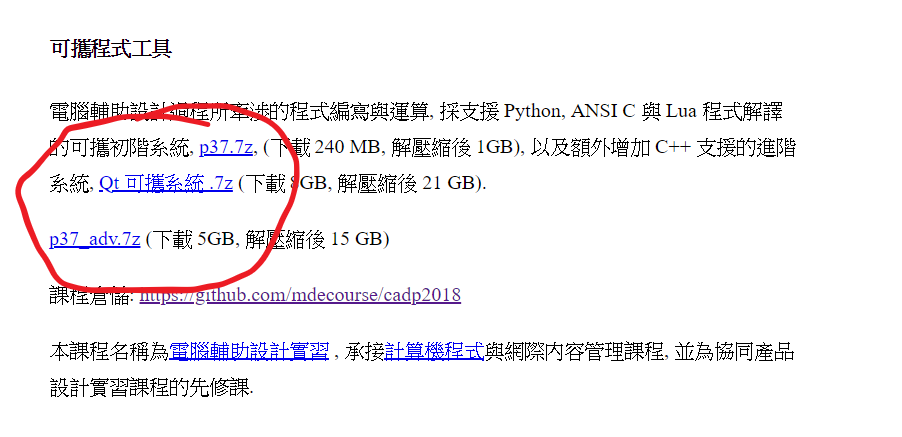
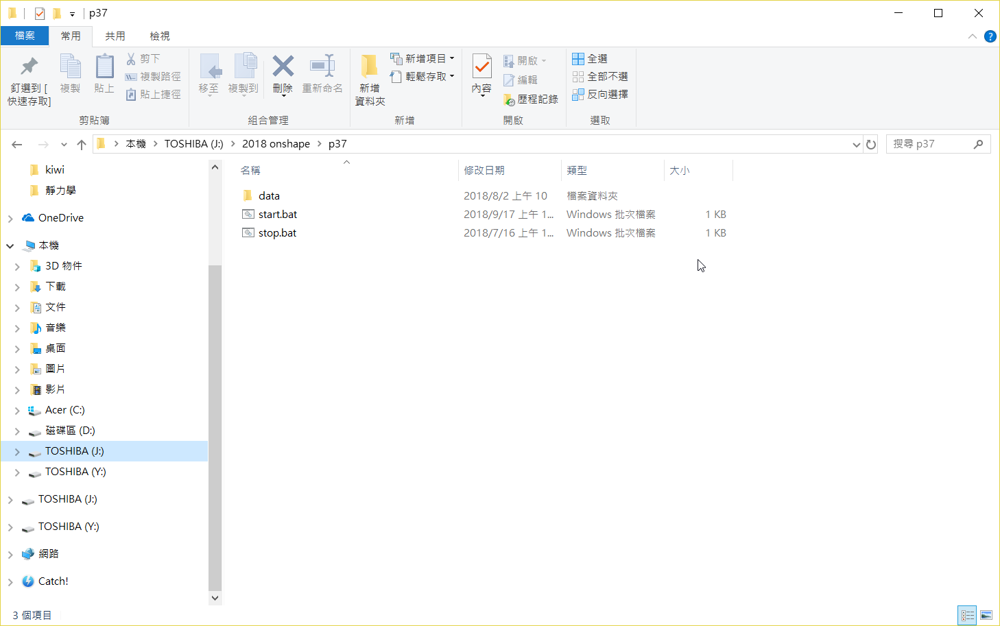
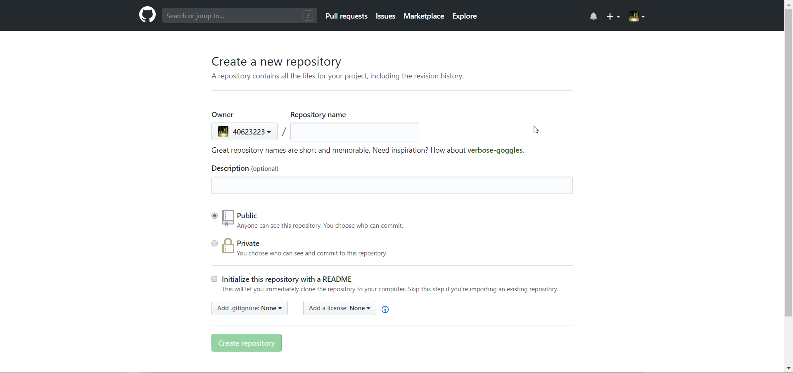

期中
Week1
9/10
至下圖之網址,按下箭頭的連結

點選圈選之隨身系統之下載,以用來使用在接下來之課程

將下載下來之檔案解壓後即可開始使用其作業系統

至github登入帳號後新建名為"學號.github.io"的倉儲

之後沒幹什麼事,就是看老師操作,不過基本上之前學的都忘了,只能一臉癡呆的看著螢幕
>Week2
9/17
襪!下禮拜放假耶,好爽喔!烤肉喔喔喔喔喔喔喔喔喔喔喔!!!!!
剩下的就不記得了,當時在上課在上什麼啊?不行,想不起來,都過了兩個月了記憶都劣化的差不多了,烤肉吃了什麼倒是還記得,為什麼呢?真神奇
Week3
9/24(放假)

Week4
10/1
這周開始要拍影片做那個onshape的作業,試著讀了一下onshape的英文文本1-1-Lesson Plan.pdf .....不行,完全看不懂
然後照著老師說的用英英字典翻譯看看,.......不行,完全看不懂
怎麼會這麼挫折阿,
1-1單字
Documents (文件)
model (模型)
Extrude (長出)
Revolve (迴轉)
sketch (草圖)
curve (曲線)
created (創建)
Geometry (幾何)
Document (文獻)
planes (水平面 o 飛機 x)
1-2影片
Week5
10/8
至此處點選作業,練習如下圖之題目,並閱讀其教材,把不懂的英文單字寫在筆記本上,但是筆記本可能寫不下這麼多所以作罷

之後拍了第一題的影片發現畫圖什麼的都忘得差不多了,多餘的步驟有點多
2-1單字
Design (設計)
Automatic (自動)
features (特徵)
engineers (工程師)
concept (概念)
accurately (準確)
create (創建)
Constraints (約束)
Dimensions (尺寸)
objects (物件)
2-2影片
Week6
10/15
這個禮拜被念說拍的影片都直接畫,沒有看原文的教材邊看邊學英文,但是這是嘗試過後發現不管是裡面的單字還是句子,開英英字典都看不懂,直接丟翻譯又說白看了,想說那就直接畫圖好了又不行,真的是問題很多ㄟ,打了這麼多廢話絕對不是應為想掩飾忘了拍影片所以打好長一串來意思意思一下,
3-1單字
linear (線性)
manipulate , operate (操作)
Cantilever (懸臂)
algebra (代數)
interfere (干涉)
cylinder (圓柱)
Assemblies (部件)
similar (類似)
product (產品)
Boolean operation 英 中 (布林運算)
3-2影片
Week7
10/22
今天要登入github的時候一直登不進去,然後去改了密碼,結果github登入時一直跳what is it !?讓我以為是我的帳號是不是出問題了,後來老師說是因為微軟動了什麼伺服來著,才會找不到的樣子,白癡微軟沒事搞這麼麻煩的事幹嘛,那之後只能用fossil了嗎?感覺超麻煩ㄟ,感覺之前做的都白做了,而且現在上傳還沒有用,媽的發科
(如果gitbuh好了的話就上傳)
4-1單字
Manipulating (操作)
position (位置)
Connectors (連結器)
Relations (關聯)
dynamic (動態)
retractable (伸縮)
Mates (配合)
kinematic (運動)
constrain (拘束)
norm (規範)
4-2影片
Week8
10/29
github恢復了,普天同慶
今天上課交了完全無法理解的東西,我想這很可能是所處的維度不同造成的,然後bolg跟revral都只做了一周而已,感覺要爆了,onshape又要看一堆英文就沒什麼幹勁,下周又有期中考,實在是很沒動力看那一堆雜七雜八的公式,
5-1單字
formats (格式)
templates (模板)
Development (發展)
immediate (立即)
management (管理)
manufacturers (製造商)
correspond (對應)
provided (供給)
Professional (專業的)
science (科學)
5-2影片
Week9
11/5
這禮拜要期中驗收,老實說除了網站做了比較多以外,blog跟reveal都沒什麼進度,每周上課的內容也都變成像週記一樣的東西了,影片的部分只做到第四週的,第五周的時間上趕不出來就放棄了,深深的感受到了平時不努力做作業的後果,離下周一上課還剩不到半天的時間,看來期中暴死是不可避了
-------------------------------------------------------------------------------------------------------------
今天上課時被告知星期五以前完成就好,當下的心情真的是有夠幹的,週六 日都一直在弄這個,
每周上課內容 << Previous Next >> 期末